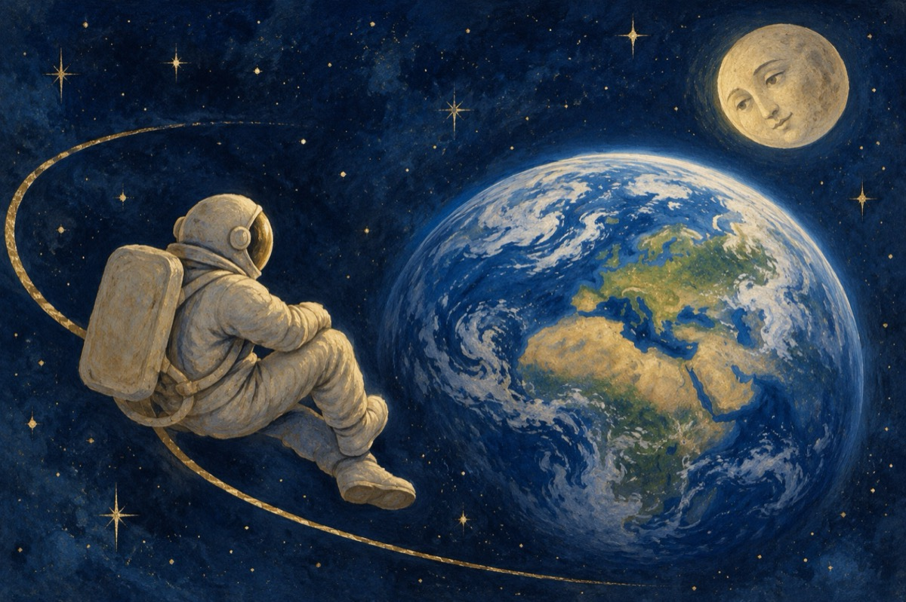

Scrisoarea unui cosmonaut
De vrei să știi ceva de mine,
Iubito sună-mă.
Eu zi și noapte privesc spre tine,
Și văd cum norii se adună,
Cum soarele în zori răsare
Cum valurile se scufundă
Cum peștii se-nmulțesc în mare.
Sună-mă că vor și stelele s-audă,
Vocea ta, semn că pământul nu e mut
Și cum că noi ne-am cunoscut
Dar îmi lipsești atât de mult,
De-atunci mereu eu tot te caut.
De-ți este dor de mine sună-mă
Să știi că eu plutesc pe o orbită.
Doar luna e aproape, ce pe pământ
Ne-a fost și ea și tu iubită!
Mi-e dor de ochii tăi albaștri
Așa cum și pământul este.
De zâmbetul tău, de-aicea dintre aștrii
Ce pentru mine exiști ca o poveste
Mi-e dor de tine, mi-e dor de toate,
Câte se-ntâmplă pe pământ.
Eu stau și te privesc din noapte
Și sper să ne vedem curând!
Vasile Groza